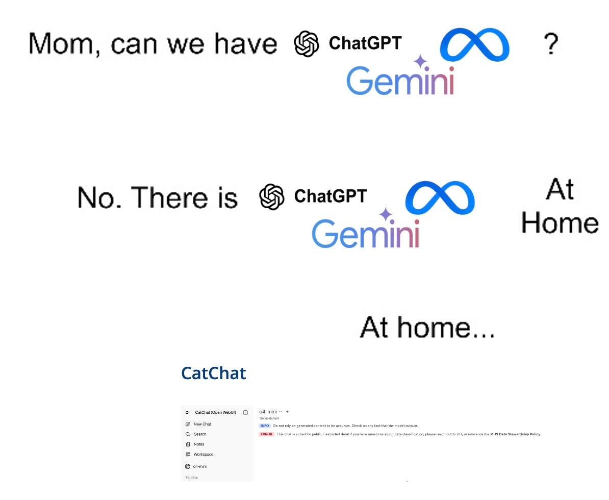
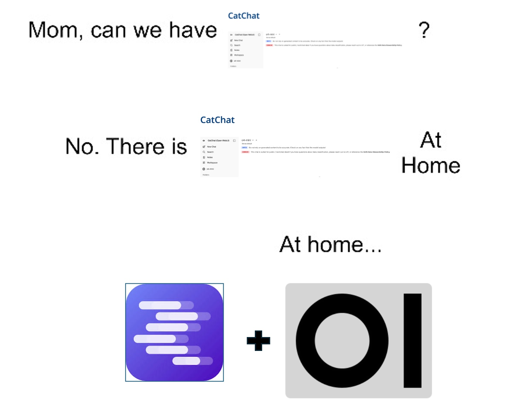

How to run AI models locally
We have AI slop at home


Links
Inference GUIs/Runtimes
Frontend
Agents/IDEs/MCP Servers
Finding Models/Information
- HuggingFace
- Reddit - LocalLLaMA
- Reddit - LocalLLaMA Wiki (Outdated but still useful)
- ArtificialAnalysis
- Arena.ai Leaderboard (Formerly LMArena)
Why Local AI Models?
Local AI offers key advantages over cloud services:
- Privacy and Security: Your data never leaves your machine, ensuring maximum confidentiality.
- Cost Control: Eliminates ongoing per-token API usage fees once the initial hardware investment is made.
- Control and Customization: You maintain full control over inference parameters (temperature, context length) and the model itself.
- Offline Capability: Models can run completely offline, independent of internet access.
Limitations and Hardware Requirements
Local models are not a perfect replacement for frontier models, and hardware matters.
Interpreting Specifications
- Model Size (7B, 13B, 70B): This is the number of parameters. More parameters generally mean better performance but require significantly more resources.
- Quantization (Q4_K_M, GGUF): This is a compression technique. Lower quantization (e.g., Q4) drastically reduces file size and memory usage but may result in a slight loss of accuracy.
- Memory Estimates: A rough guide: a 7B Q4 model generally requires about 4-5 GB of memory (VRAM or RAM).
Hardware Check
Look for dedicated GPU VRAM if possible, as this provides the fastest inference. Strong multi-core CPU and large system RAM are viable alternatives for slower performance.
Local Model Options and Resources
There are several tools to get started:
- LM Studio/Unsloth Studio/Ollama Desktop: An all-in-one GUI solution, ideal for beginners.
- Llama.cpp/Llama.app: A highly optimized C/C++ library focused on maximizing efficiency on various hardware.
- OpenWebUI/Frontends: Web UIs that connect to a local API (e.g., running on LM Studio or Ollama), offering a polished chat experience.
Local vs. Frontier Models (GPT/Claude Comparison)
| Feature | Local Models (LLaMA, etc.) | Frontier Models (GPT, Claude) |
|---|---|---|
| Privacy | Excellent (Data stays local) | Limited (Data must leave environment) |
| Reasoning/Knowledge | Good, but limited by model size/training | State-of-the-art, massive, up-to-date |
| Cost | Predictable (Hardware cost only) | Variable (Per-token operational cost) |
| Best For | Privacy-sensitive tasks, offline use, narrow focus | Cutting-edge tasks, complex creative generation |
- Choose Local: When privacy is paramount, or the task is narrow (e.g., summarizing internal docs).
- Choose Frontier: When the task requires the absolute cutting edge in reasoning or massive, up-to-date knowledge.
Setup Instructions (LM Studio + Open WebUI = Cat Chat at Home)
Getting Started with LM Studio (The Easy Way)
- Download & Install: Download and install LM Studio (Don’t download LM Studio Bionic).
- Model Selection: Search and download a manageable model.
- LM Studio will tell you the estimated size of the model and whether it can run on your machine.
- Initial Chat: Load the model in LM Studio and start chatting with it
You can customize the model in the model specific settings
Options include setting a system prompt, changing the model temperature, setting up structured output, etc.
Using LM Studio as a server and Connect to other applications (Cat Chat at home)
- Download OpenWebui Desktop, you don’t need the llama.cpp packaged alongside it.
- LM Studio Server Setup: Switch LM Studio to “Local Inference Server” mode.
- Developer Options need to be enabled in the settings
- Once developer options are enabled, a server tab should appear in the sidebar
- Click on the server tab and launch the server.
- A local server should be hosted at
http://127.0.0.1:1234(http://localhost:1234) by default
- OpenWebUI Connection:
- Setup admin account
- If you just plan on running models on your computer or if youre the only one that will ever use them, a secure password isn’t really necessary
- Once you’ve made the admin account you should be brought into the Open Webui client, if not there should be an option to get to it in the sidebar
- Navigate to the connections pannel in admin settings by clicking on account icon in the bottom right -> Settings -> AI -> Connections
- Under OpenAI API click the
+associated with Manage OpenAI API Connections- Change Connection type to
local - Set the URL to either
http://127.0.0.1:1234/v1orhttp://localhost:1234/v1 - Verify that the connection works
- Click save
- Change Connection type to
- Go back to chat and try and select a model that you have downloaded
- Setup admin account
- If you want to connect your local models to other applications such as IDEs or other Agent software, you can connect them in a similar way. Most applications allow you to add a custom provider
Connecting to MCP Servers
If you are connecting to a specific MCP (Machine Control Protocol) server endpoint, you will follow a similar process to connecting to OpenAI API connections, but you will need to specify the correct endpoint and provider type.
- Determine Endpoint: Confirm the exact URL provided by your MCP server (e.g.,
http://mcp-server.local:8000/v1). - Access Connections Panel: In OpenWebUI, navigate to Settings -> AI -> Connections.
- Add Custom Provider: Click the
+button and select ‘Custom API Endpoint’ (or similar, depending on the latest OpenWebUI version). - Configure: Set the URL to your MCP server’s endpoint and verify the connection works before saving.
This method allows you to integrate local models or specific services running on an MCP server into your chat frontend.